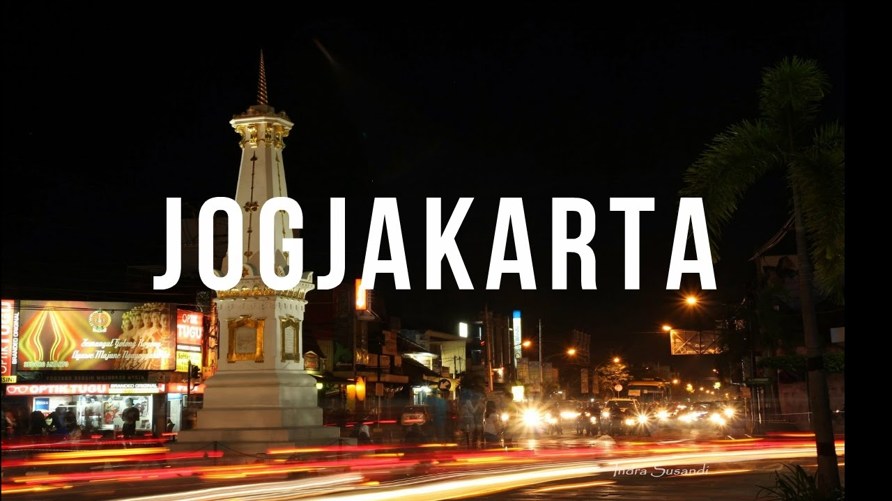
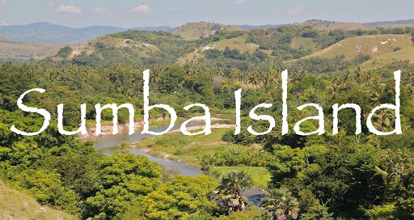

DESTINASI
LABUAN BAJO
Labuan bajo menjadi destinasi favorit bagi kalangan traveler yang berada di Nusa Tenggara Timur. Dengan view keindahannya yang tak tertandingi akan lautnya yang terbentang luas. Ada banyak kegiatan yang bisa dilakukan mulai dari diving, snorkling, penanaman karang dan penginapan.
YOGYAKARTA
Yogyakarta juga menjadi salah satu ikonik wisata bagi para traveler yang harus dikunjungi. Ada banyak kuliner yang bisa dinikmati wisatawan dengan harga yang terjangkau, wisata Candi peninggalan sejarah yang menjadi spot favorit dan juga penginapan yang nyaman dan murah.
SUMBA ISLAND
Sumba island merupakan destinasi wisata yang menyajikan keindahan alam mulai dari air terjun, bentangan bukit, dan penginapan yang menyatu dengan keindahan alam.